Motivi tattici
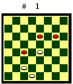
Tiro
Il tiro è una manovra con cui si danno dei pezzi in presa per preparare una nostra presa finale che consegua vantaggi materiali o di posizione. E' l'elemento forse più spettacolare del gioco della dama e può raggiungere una notevole complessità, la cui misura è la cosiddetta "intenzione", cioè il numero di mosse che deve fare il giocatore prima di effettuare la presa finale. Nel Diagramma 1 il Bianco muove e fa un tiro di 2a intenzione: 19-15 (prima mossa), 11x20 (12x19 produce lo stesso risultato); 26-22 (seconda mossa), 18x27; 30x7 (presa finale).
Un altro aspetto importante del tiro è che, di fatto, allunga il raggio di azione delle pedine. Nel Diagramma 1 le caselle 11 e 12 non sono inibite al Nero da nessuna pedina bianca, ma dal meccanismo di tiro approntato con le pedine bianche in 19, 26 e 30 e la pedina nera in 18, che in questo caso gioca per l'avversario.
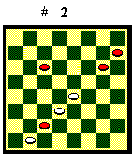
Nel Diagramma 2 è riportato un altro tiro di 2a intenzione piuttosto comune detto "ribattino". Il Bianco muove: 19-14, 10x19, 22x15, 12x19, 29x15.
In gioco vivo, di norma, ci sono
anche pezzi non coinvolti nella manovra e i tiri sono più difficili
da "vedere". Soprattutto in apertura, dove le posizioni sono
complesse per l'alto numero di pedine, e nei finali, dove le dame aumentano
le possibilità combinatorie.
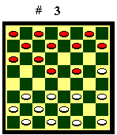
Tiri di apertura
Diagramma 3. Il Nero muove: 15-19; 22x15, 7-12; 16x7, 3x28; 32x23, 14-18; 21x14, 10x28 il Nero dama e vince. E' il celeberrimo "Tiro di Canalejas", presentato dall'autore spagnolo nel suo trattato del 1650.
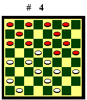
Diagramma 4. Il Nero muove:
10-13; 17x10, 16-20; 23x16, 9-13; 18x9, 11x18; 22x13, 5x30 il Nero vince.
E' il famoso "Tiro del Vigevano", presentato dal Lanci nel suo
trattato del 1837.
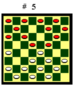
Diagramma 5. Il Nero muove: 15-20; 24x15, 14-18; 22x6, 2x20; 23x16, 9-13; 17x10, 5x32 il Nero vince. E' il "Tiro del Bolognese", anch'esso presentato dal Lanci nel suo trattato del 1837.
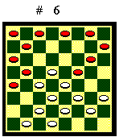
Diagramma 6. Il Nero muove:
17-21; 26x10, 9-13; 18x9, 15-20; 23x7, 4x18; 22x13, 5x32 il Nero ha un
pezzo in meno, ma porta in gioco la dama e vince.
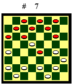
Diagramma 7. Il Nero muove: 10-13; 17x1, 6-10; 14x5, 19-23; 28x19, 12-15; 20x11 7x30 il Nero ha due pezzi in meno, ma la dama bianca è fuori gioco. Il Nero dovrebbe vincere il finale.
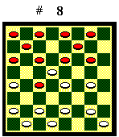
Diagramma 8. Il Nero muove:
18-21; 25x18, 10-13; 17x10, 3-6; 10x3, 12-15; 3x12, 15x31; 14x7, 31x8 il
Bianco deve muovere 7-3 e il Nero vince facile con 4-7.
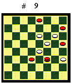
Tiri di finale
Diagramma 9. Il Bianco muove: 11-7, 23x14; 24-20, 16x23; 15-11, 8x15; 7-4, 14x7; 4x18 il Bianco vince.
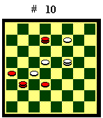
Diagramma 10. Il Bianco muove:
15-11, 6x15; 14-11, 21x14 (oppure 15x6); 7-3, 15x6 (oppure 14x7); 3x26
il Bianco vince.
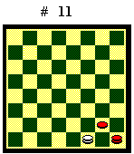
Blocco
Il blocco è una posizione in cui un giocatore non può muovere e quindi perde.
Diagramma 11. Il Nero muove
e perde.
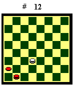
Diagramma 12. Il Nero muove e perde.
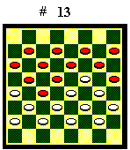
Spettacolari blocchi possono verificarsi
in apertura, in partite simmetriche, dove il Nero copia le mosse del Bianco.
Diagramma 13. Il Bianco muove e perde.
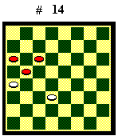
Legatura
La legatura è una posizione
in cui un giocatore può effettuare soltanto mosse con cui perde
materiale. Di seguito alcune legature elementari. Il Nero muove. 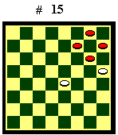 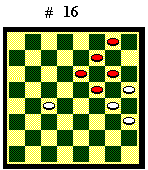
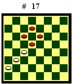
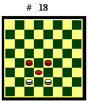
In gioco vivo le possibilità di legature sono molto varie. In apertura e centro partita si possono formare spettacolari legature totali, in cui la posizione avversaria crolla di colpo, come un castello di carte. Ma, attenzione: se si sbagliano i calcoli anche di un solo tempo, può essere la nostra posizione a rimanere legata!
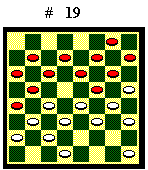
Diagramma 19. Il Nero muove ed è legato.
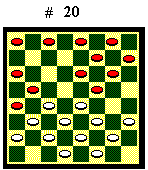
Diagramma 20. Il Bianco
muove ed è legato.
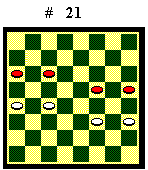
Sacrificio
Il sacrificio è l'offerta di un pezzo per conseguire vantaggi di posizione che portino a guadagni futuri. E' una manovra brillante che spesso spiazza l'avversario, ma, se si è stati carenti nell'analisi e non si riesce a sfruttare il vantaggio posizionale, di norma si perde.
Si sacrifica per effettuare (o per
evitare) un tiro, un blocco o una legatura. Diagramma 21. Il Bianco
muove: 24-20 (sacrificio per liberarsi dalla legatura), X, 23-19, 24-28,
18-14 il Bianco riprende il pezzo e patta.
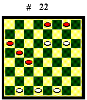
Si sacrifica per forzare la damatura. Diagramma 22. Il Bianco muove: 12-7! sacrifica per damare la pedina in 11, poi , con la base protetta, che impedisce al Nero la damatura, porta in gioco la dama e vince.
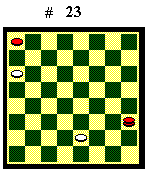
In finale, si sacrifica per una patta
sotto pezzo. Diagramma 23. Il Bianco muove: 27-23! (sacrifica per
immettersi in un finale teorico di patta sotto pezzo. Se 27-22?, 24-20,
22-19, 20-15, 9-5 ecc. la dama nera ha la mossa sulla bianca e Nv), 24-20,
9-5, X, 5-2 la dama bianca ha la mossa sulla nera, blocca la pedina e patta.
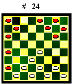
Di norma il sacrificio si effettua in centro partita o in finale, quando, per il numero ridotto di pezzi in gioco, l'analisi della posizione è più semplice. In apertura è molto rischioso ed è consigliabile solo se porta a posizioni conosciute e analizzate a fondo da esperti. Una partita teorica che si basa su un sacrificio in apertura, è la "Fife", che riporto a titolo d'esempio:
1.23-19 11-15 2.21-18 10-13 3.25-21 13-17 4.18-14 15-20 5.24x15 6-11 6.15x6 2x25 (Diagramma 24) Il Bianco ha una posizione solida ed è padrone del centro. Il Nero, con i pezzi separati e addossati a sponda, pur con una pedina in più, deve subire l'iniziativa avversaria.
Può seguire: 7.19-14 5-10
8.14x5 1x10 9.22-18 10-14 10.18x11 7x14 11.28-23 4-7 12.32-28 7-11 13.28-24
12-16 14.27-22 3-6 15.22-19 6-10 16.24-20 8-12 17.31-28 9-13 18.28-24 (il
Nero deve restiruire il pezzo) 17-21 19.26x17 ecc. Posizione di pari.
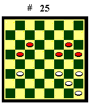
Combinazione
In gioco vivo gli elementi e i motivi tattici vengono composti secondo le capacità e l'estro del giocatore. Le combinazioni più brillanti sono quelle che attingono a una varietà di temi diversi.
Nel Diagramma 25 il Bianco sembra spacciato: l'unica mossa con cui non perde materiale è 21-17, ma il Nero risponde 13-18 e lo lega. Eppure si salva con una bella combinazione!
Il Bianco muove: 23-19 (sacrificio)
15x22; 21-18 (forzatura) 13-17; 18-13 (forzatura) 10-14; 24-20 (tiro) 16x23;
28x10 pari.
Indice